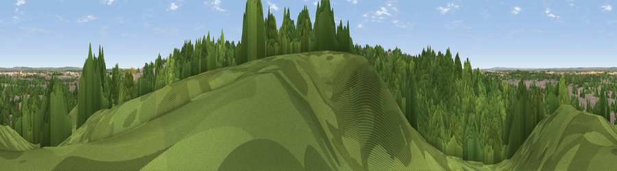

Viewpoint near Erith
#41757 in England · top 53% of its area beats it · near ErithWhere it is
The exact computed spot (TQ 48425 78675). Click the marker for map links.
The view, rendered

A 360° render of this exact spot computed from the terrain model, tree cover and land cover — summer colours, afternoon light, calibrated against photographs of famous viewpoints. Real trees, hedges and buildings will differ in detail.
The panorama
Grey silhouette: terrain skyline in each direction (720 bearings, Earth curvature and refraction included). Dashed green: skyline with trees (+15 m) and buildings (+8 m) as obstacles. Blue strip: how far the ground is visible on each bearing.
Where the view opens
Wedge length = distance to the farthest visible ground on that bearing (vegetation-aware). Rings at 10, 25 and 50 km.
What fills the view
60% woodland · 29% built-up · 9% grassland · 1% water
Angular shares of the visible panorama (visual magnitude), not map area. Landscape diversity 0.42 (0–1 Shannon).
Key numbers
More beautiful places nearby
The staircase of upgrades: each row has a higher view potential than everything closer. Driving times are estimates from straight-line distance, calibrated against real road routing — check an actual route before setting out.
| Place | Direction | Drive | Score |
|---|---|---|---|
| Viewpoint near Erith | E · 1 km | ~4 min | 26.2 |
| Viewpoint near Erith | E · 2 km | ~5 min | 26.8 |
| Viewpoint near Woolwich | WSW · 2 km | ~5 min | 27.1 |
| Viewpoint near Erith | E · 4 km | ~9 min | 38.9 |
| Viewpoint near North Ockendon | ENE · 13 km | ~24 min | 40.9 |
| Viewpoint near Ebbsfleet Valley | ESE · 13 km | ~24 min | 41.1 |
| Jury Hill | NE · 17 km | ~30 min | 48.5 |
| Viewpoint near Horndon On The Hill | ENE · 20 km | ~34 min | 51.8 |
51.48755, 0.13637 · source: screening · position refined by local search. Computed location — check access rights before visiting.